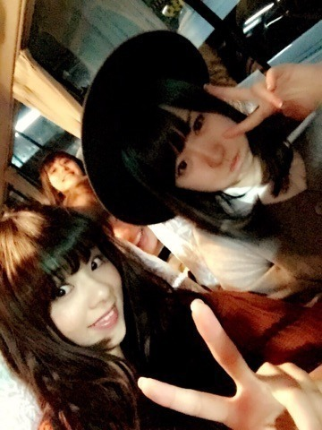
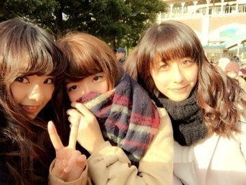

は～い（＾Ｏ＾）
まひろ と 畠中です！！！
朝からお仕事あったんだけど、次のお仕事まで時間が空いてるので、blog書こうかな～♩って思ってね...❤️
ちなみに今、マネージャーさんと花奈で遅めの昼ご飯食べてきたよ。
最近のこと色々書こうかな～。
あっ！そういえばこの間All LIVE NIPPON VOL.3に、地元のお友達3人がわざわざ来てくれたの！
それでね,その日20時とかに仕事が終わったから、都内で合流して一緒にラーメン食べに行ってきました！
地元の友達とご飯行くなんて本当 久々だからめっちゃ幸せだった( ´ ▽ ` )ﾉ
いっぱい話せていっぱい笑ったし,エネルギーチャージされました！！！
はい。ロケバスにて。まに・ずー
(間にちー・まあや)

それと,水曜だったかな？
Samurai ELOの撮影があったんだけど、撮影終わりに七瀬とご飯行ってきたよ！
やっと行けた～～ヾ(＠⌒ー⌒＠)ノ
この間2人で鍋に行ったんだけど、今回はカレーーーー。
七瀬が辛いもの食べたい！って言ってたら、そこに、私の姉に勧められて前から行きたかったカレー屋さんがあったの❤️！
でまあ、七瀬と食べてお話して、その後はお互い違う仕事場に向かいました.＊
また今度ゆっくりしよーね。
これはディズニー行った日の写真だよ。

じゃあ残りの時間は仮眠します。
またね。まにより。